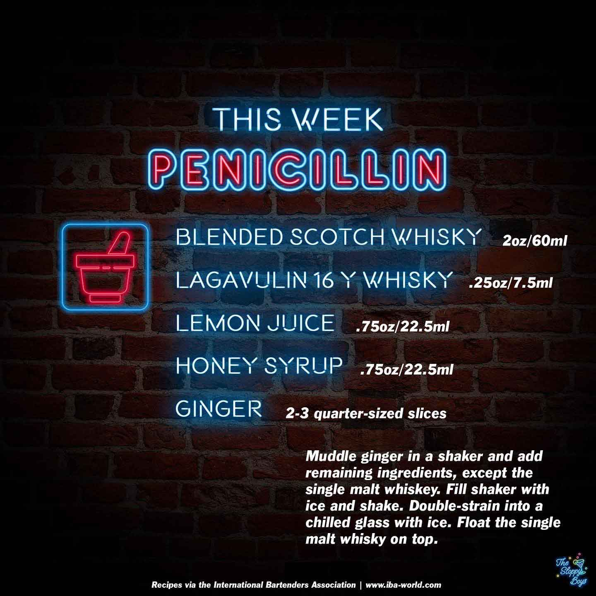

Penicillin
Ingredients
- Blended Scotch Whisky (2oz/60ml)
- Lagavulin 16y Whisky (.25oz/7.5ml)
- Lemon Juice (.75oz/22.5ml)
- Honey Syrup (.75oz/22.5ml)
- Ginger (2-3 quarter-sized slices)
Steps
- Muddle ginger in a shaker and add remaining ingredients, except the single malt whiskey.
- Fill shaker with ice and shake.
- Double-strain into a chilled glass with ice.
- Float the single malt whisky on top.
Notes